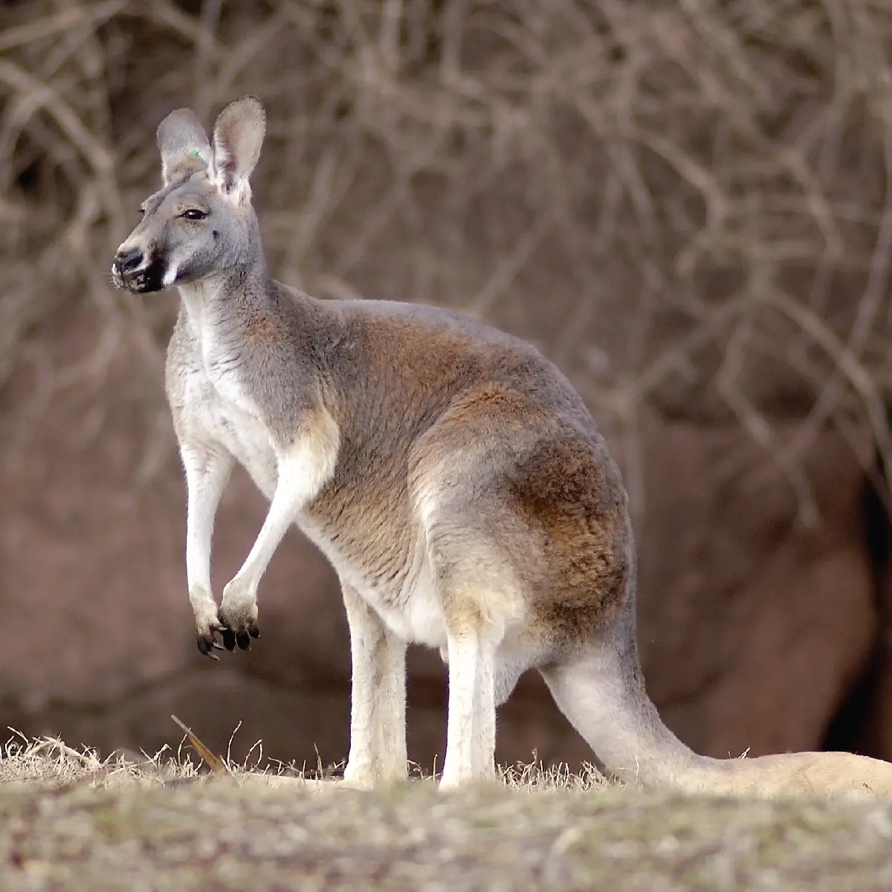
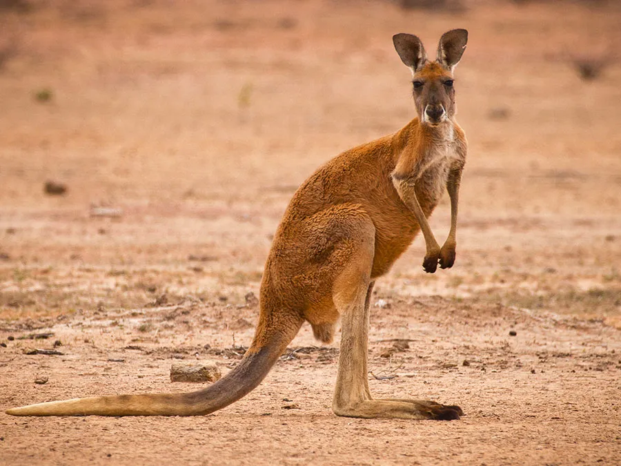
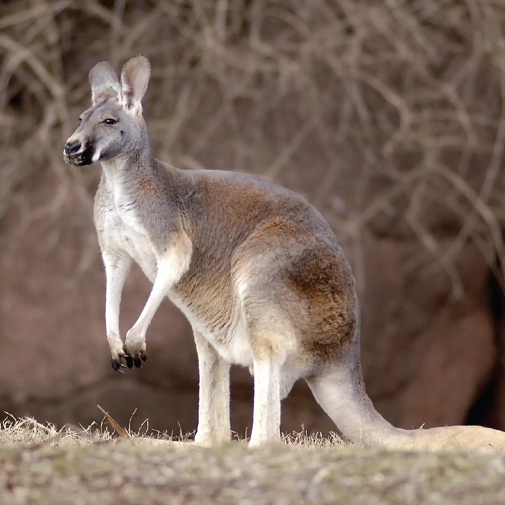
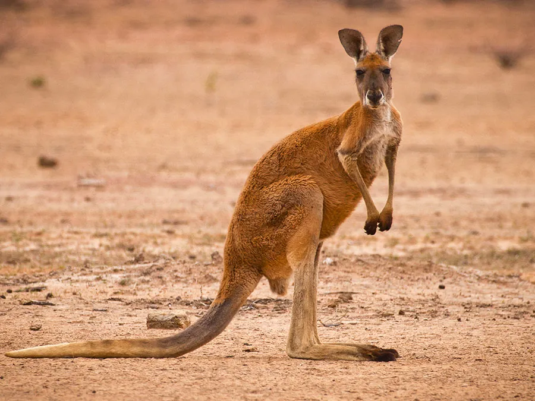

Australia is the sixth-largest country in the world. It is also one of the driest continents on the earth.
Its huge landmass offers a varied landscape of deserts, tropical rainforests, and mountain ranges. Australia is famous
for its Great Barrier Reef, the largest coral reef in the world. An island continent, it is surrounded by the
Indian and Pacific Oceans.
It includes the Autralia mainland, the island of Tasmania, and other small islands.
Australia's unique geographic position and centures of isolation created ecosystems that are unique in the world. Of its flora and fauna, 84% of its mammals, 45% of its birds, 93% of its reptiles and 90%
of its fish are endemic. Australia has 755 species of reptile, which is more than any country in the world.
Australia's Unique Animals
- Australia's most famous animals are iss marsupials. Koalas, Kangaroos, and Wombats are some of the world's best-loved animals.
- Australia is also famous for its large, scary alligators and its many deadly snake and spider species.
- Austraila has some unusual members of the monotreme family, including the platypus and echidna.
- There are large numbers of animals that were intrduced as domestic pets but are now wild. These include dingoes, water buffalos, camels, donkeys, pigs, goats, and betangs, which are cows that originated in Asia.
Kangaroos
 



Koalas and Wombats
What Is the National Animal of Australia?
Australia's national animal is the red kangaroo(Macropus rufurs). Also known as the red girant kangaroo, it is the biggest land mammal that's native to Australia. Red kangaroos are plentiful in Australia. and they are listed as "least concern" for conservation status. Like all wildlife, however, they are protected by Australian law.
Which Animals Are Extinct or Endangered in Australia?
Australia currently has more than 500 animals on the endangered species list.
- Spotted quoll
- Trasmanian devil
- Black-flanked rock-wallaby
- Eastern curlew
Native Birds
Other well-known birds native to Australia
- Emu
- Little Penguin
- Laughing Kookaburra
- Cassowary
- Tawny Frogmouth